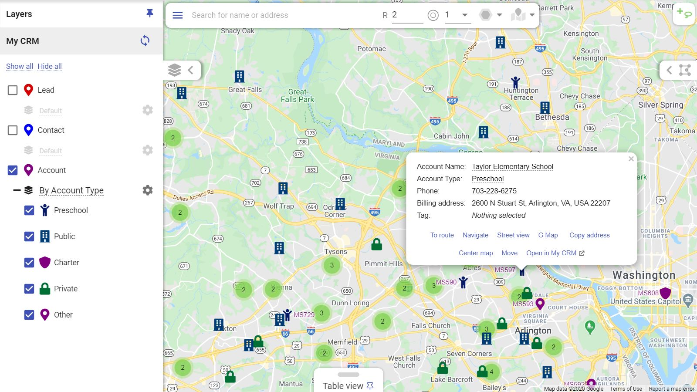
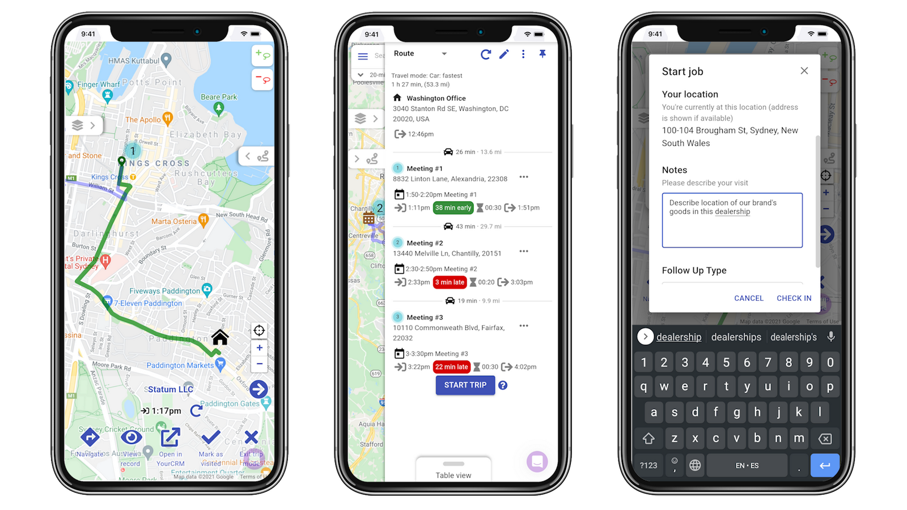
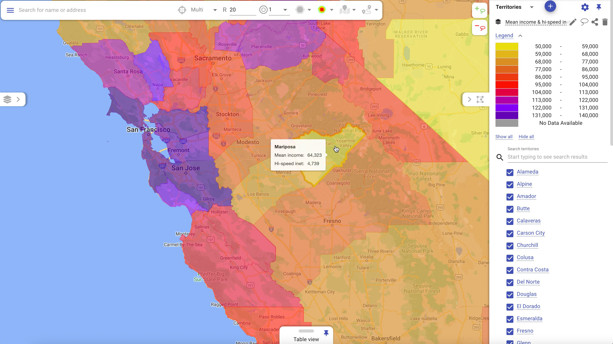
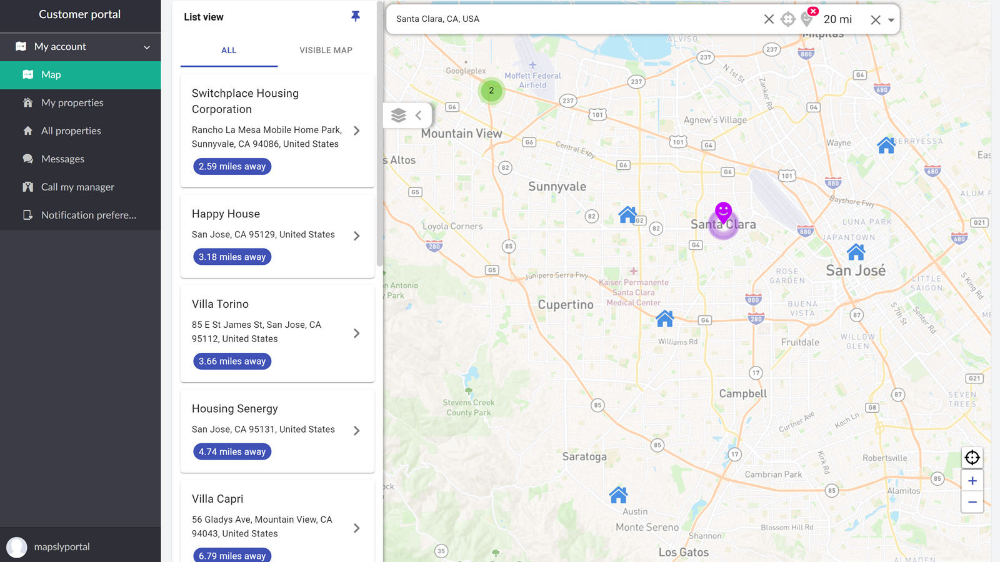
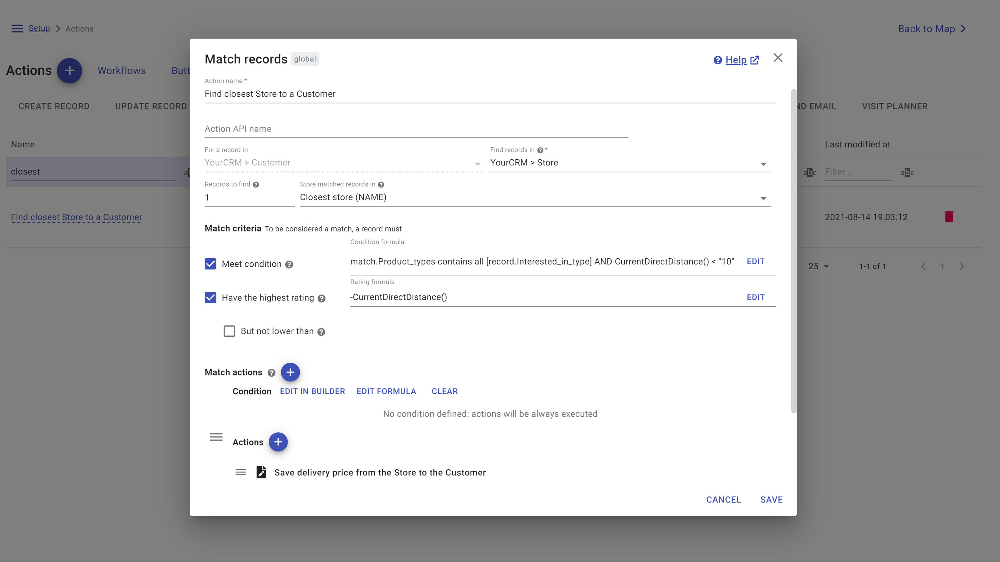

A powerful geolocation platform for viewing, searching, filtering and editing records on the map, optimized multi-day routing with location tracking and planning regular visits, territories management with auto-assignment, embedding live maps to websites & portals, prospect discovery and no-code automation with workflows, buttons, forms, actions and built-in geo-functions like calculating driving distance/time between any locations.
TRY MAPSLY FOR FREE for 2 weeks (no credit card required). 24/7 chat support, implementation services and live training of your sales/service team are included in your Mapsly subscription.
https://mapsly.com/meet
https://mapsly.com/livechat
https://mapsly.com/odoo
https://youtu.be/SELsD34BGv4
View and (mass-)edit records from any Odoo CRM object on the map, including custom ones, with real-time sync to Odoo
Split your data into map layers with custom markers using visual formula builder
Search CRM records near a location and sort/filter them by distance
Customize map markers, pick fields for their labels and pop-ups, and switch between layer groups to instantly re-colorize your records based on different criteria
Create records in any Odoo CRM object from the map with pre-filled address and coordinates
Auto-correct errors in addresses and fill in zip and counties; import their coordinates back to CRM
Plan optimized multi-day routes for sales and services teams, with up to 1000 stops, based on live/historical traffic and various job parameters (duration, open hours, required skills and capacity, and more) and vehicle parameters (working hours, truck size and capacity, skills, and more) controlled directly from your Odoo
Choose your job type: service, pickup, delivery or a complex pickup-delivery job
Configure check-in, check-out or any other custom processes with buttons and custom forms
Collect recipient e-signatures on couriers' mobile phones
Take photos using Mapsly app and save them in Mapsly or as attachments in your CRM
Save check-in, check-out or custom events and data collected with forms to your Odoo CRM in real time
View users' current location and history of movements
Plan regular visits with desired regularity and duration, for individual sales reps or entire teams
Navigate to locations using your favorite app or Mapsly's built-in navigation
https://youtu.be/DSWejED2d6s
Draw territories or assemble them out of postal codes, counties, census tracts, etc. using the geo-library
Auto-assign records to territories and sales reps based on custom criteria
Calculate aggregate metrics per-territory out of your CRM data
View demographic data (US only)
Embed live maps with territories into dashboards, portals and websites
Automatically create/update territories for individual CRM records
Share maps with live data and desired Mapsly features by link and embed them into websites, portals or dashboards, or send by email
Add personalized maps with unique dataset per customer to your customer portal
Add custom buttons, forms and let users execute processes/automation from embedded maps
Search local businesses by keywords and add them as records of any Odoo CRM object
Adjust field mapping, use custom fields, and add fields with fixed values
Execute custom actions by a button, by schedule or entirely automatically, without writing code
Create/update/delete records and territories, send email and SMS, call external APIs, and more
Search records by custom criteria that may include driving distance or time, and execute actions with them
Create dynamic forms that show/hide fields and call external APIs as user fills in the form
Use user's current location and calculate driving distance/time between any locations
Implement cross-system analysis and automation by connecting spreadsheets and other data sources to Mapsly
View any Odoo CRM objects on the map. Choose any fields for object labels and map popups. Slice data into formula-based sub-layers with custom markers. Hide records using map filters. Search records by distance from a base location. (Mass-)update records, re-assign ownership. Execute custom actions with records.
Create optimized multi-day routes for individual users or entire teams, based on live & historical traffic, desktop & mobile. View their real-time & historical locations. Save/load/re-assign routes. Configure check-in & check-out processes. Gather data with custom forms, take photos, collect e-signatures, upload documents. Set job types (service, pickup, delivery or a complex pickup-delivery) and other parameters.
Draw territories on the map or create them using geo-library (zip codes, counties, etc.). Auto-assign records to territories and sales reps. Add aggregate metrics. Share by link and embed into dashboards.
Share live maps by link & embed them to websites, dashboards or send by email. Add personal maps to customer portals with data dynamically tailored to the logged in user. Select data to share and features to be available on shared maps. Add filters by distance & any fields, custom buttons/forms/actions including API callouts.
Use Mapsly automation suite to execute complex actions including nearby search by custom criteria when records are created/modified, by a button or by schedule. Use user's location, gather data with custom forms, calculate driving distance/time between any locations. Share your vision - and we'll implement it in Mapsly free-of-charge.
TRY MAPSLY FOR FREE for 2 weeks (no credit card required). 24/7 chat support, implementation services and live training of your sales/service team are included in your Mapsly subscription.
https://mapsly.com/meet
https://mapsly.com/livechat
https://mapsly.com/odoo